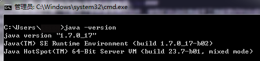

第一章 Burp Suite 安装和环境配置
Burp Suite是一个集成化的渗透测试工具，它集合了多种渗透测试组件，使我们自动化地或手工地能更好的完成对web应用的渗透测试和攻击。在渗透测试中，我们使用Burp Suite将使得测试工作变得更加容易和方便，即使在不需要娴熟的技巧的情况下，只有我们熟悉Burp Suite的使用，也使得渗透测试工作变得轻松和高效。
Burp Suite是由Java语言编写而成，而Java自身的跨平台性，使得软件的学习和使用更加方便。Burp Suite不像其他的自动化测试工具，它需要你手工的去配置一些参数，触发一些自动化流程，然后它才会开始工作。
Burp Suite可执行程序是java文件类型的jar文件，免费版的可以从免费版下载地址进行下载。免费版的Burp Suite会有许多限制，很多的高级工具无法使用，如果您想使用更多的高级功能，需要付费购买专业版。专业版与免费版的主要区别有
- Burp Scanner
- 工作空间的保存和恢复
- 拓展工具，如Target Analyzer, Content Discovery和 Task Scheduler
本章主要讲述Burp Suite的基本配置，包含如下内容：
- 如何从命令行启动Burp Suite</br>
- 如何设置JVM内存 大小</br>
- IPv6问题调试
如何从命令行启动Burp Suite
Burp Suite是一个无需安装软件，下载完成后，直接从命令行启用即可。但Burp Suite是用Java语言开发的，运行时依赖于JRE，需要提前Java可运行环境。如果没有配置Java环境或者不知道如何配置的童鞋请参考win7电脑上的Java环境配置 配置完Java环境之后，首先验证Java配置是否正确，如果输入java -version 出现下图的结果，证明配置正确且已完成。  这时，你只要在cmd里执行java -jar /your_burpsuite_path/burpSuite.jar即可启动Burp Suite,或者，你将Burp Suite的jar放入class_path目录下，直接执行java -jar burpSuite.jar也可以启动。
==注意：your_burpsuite_path为你Burp Suite所在路径，burpSuite.jar文件名必须跟你下载的jar文件名称一致==
如何设置JVM内存 大小
如果Java可运行环境配置正确的话，当你双击burpSuite.jar即可启动软件，这时，Burp Suite自己会自动分配最大的可用内存，具体实际分配了多少内存，默认一般为64M。当我们在渗透测试过程，如果有成千上万个请求通过Burp Suite，这时就可能会导致Burp Suite因内存不足而崩溃，从而会丢失渗透测试过程中的相关数据，这是我们不希望看到的。因此，当我们启动Burp Suite时，通常会指定它使用的内存大小。 一般来说，我们通常会分配2G的内存供Burp Suite使用，如果你的电脑内存足够，可以分配4G；如果你的电脑内存足够小，你也可以分配128M。当你给Burp Suite分配足够多的内存时，它能做的工作也会更多。指定Burp Suite占用内存大小的具体配置方法是在启动脚本里添加如下命令行参数： 假设启动脚本的名称为burp_suite_start.bat，则该bat脚本的内容为
java -jar -Xmx2048M /your_burpsuite_path/burpsuite.jar
其中参数-Xmx指定JVM可用的最大内存，单位可以是M，也可以是G，如果是G为单位的话，则脚本内容为：
java -jar -Xmx2G /your_burpsuite_path/burpsuite.jar
更多关于JVM性能调优的知识请阅读 Oracle JVM Tuning
IPv6问题调试
Burp Suite是不支持IPv6地址进行数据通信的，这时在cmd控制台里就会抛出如下异常
java.net.SocketException: Permission denied
同时，浏览器访问时，也会出现异常
Burp proxy error: Permission denied: connect
当出现如上问题时，我们需要修改启动脚本，添加对IPv4的指定后，重启Burp Suite即可。
java -jar -Xmx2048M -Djava.net.preferIPv4Stack=true /your_burpsuite_path/burpsuite.jar
通过 -Djava.net.preferIPv4Stack=true参数的设置，告诉Java运行环境，使用IPv4协议栈进行数据通信，IPv6协议将会被禁止使用。 这个错误最常见于64位的windows操作系统上，使用了32位的JDK